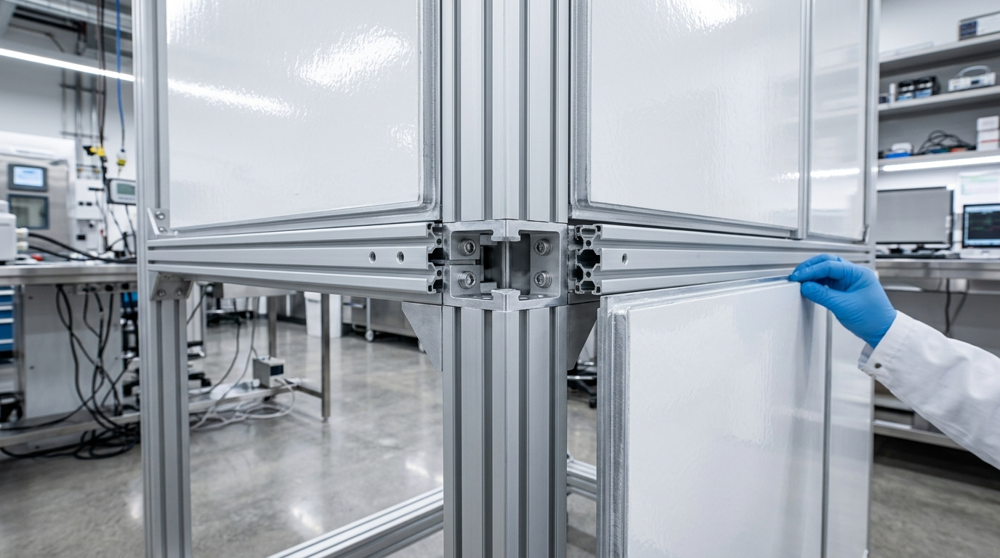
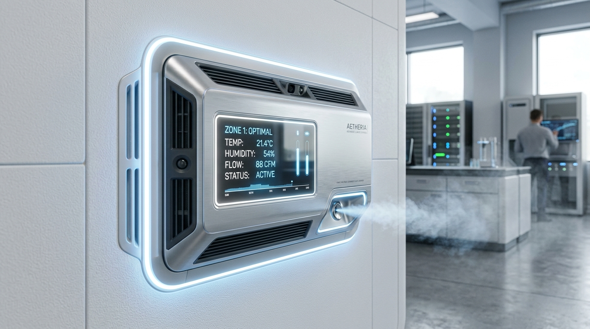
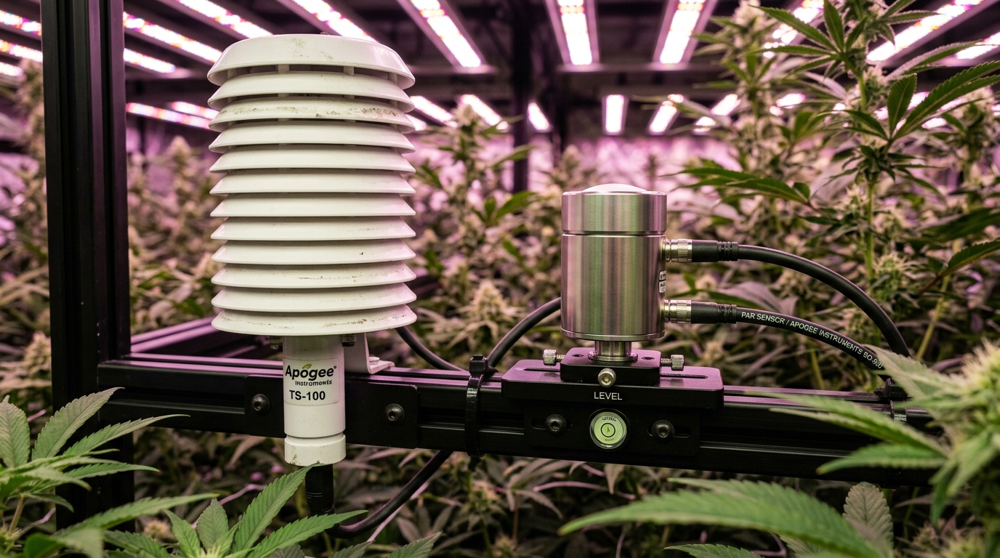
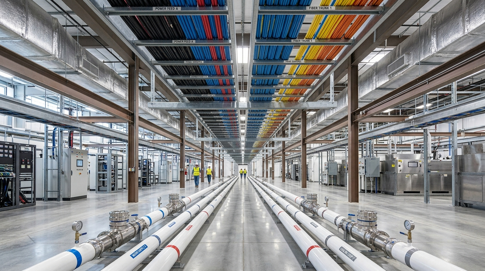

Executive Summary
Domain Report:
Physical Infrastructure
& Hardware
Goal: Design the physical architecture of the growing system, selecting the appropriate structural materials, modular enclosures, HVAC components, humidification systems, and environmental sensors capable of strictly maintaining and scaling any specified microclimate.
This report details the architectural requirements for a modular, high-precision growing environment capable of maintaining strict microclimate tolerances (±0.5°C and ±2% RH). The design integrates heavy-duty structural aluminum framing with advanced vacuum-insulation technology, inverter-driven climate control hardware, and a high-fidelity sensor suite. Scalability is achieved through a standardized central trunk utility topology, allowing for seamless expansion without compromising environmental integrity.
1. Structural Framework
and Enclosure Design
The foundation of the system rests on a modular, high-rigidity framework designed for thermal isolation and structural stacking.
Framework and Insulation
The primary structure utilizes 45 Series (45mm) or 15 Series (1.5 inch) T-slot aluminum (6063-T5). This material selection provides the necessary mechanical strength for vertical stacking while offering the flexibility required for modular adjustments. To achieve extreme thermal isolation, the design specifies Vacuum Insulated Panels (VIP) with a Polyurethane layer, achieving an industry-leading R-60 per inch. For standard modular builds, Polyisocyanurate (PIR) Metal Panels (R-14 at 2" thickness) serve as a high-performance alternative.
Sealing and Thermal Integrity
To maintain airtightness, a three-path sealing strategy is employed:
- Primary Seals: EPDM rubber panel gaskets with V-cut corners.
- Interface Sealing: Silicone RTV or Butyl tape at frame joints.
- Exterior Reinforcement: Mechanical T-seals for exterior slots.
Vertical expansion requires the use of PVC or Phenolic thermal break strips between modules to interrupt thermal bridging through the aluminum framework. Horizontal expansion is managed via linear bar connectors and 1/4 inch closed-cell neoprene gaskets, compressed to 30% by external joining plates to prevent thermal leaks.

2. Advanced HVAC and
Microclimate Control
Maintaining a target stability of ±0.5°C and ±2% RH requires a departure from traditional on/off climate systems in favor of fully modulating hardware.
Sensible and Latent Load Management
- Cooling and Heating: Precision mini-splits (e.g., Mitsubishi Electric P-Series or Vertiv Liebert SRC) are required. These must utilize inverter-driven compressors and EC fans to provide continuous, modulated output.
- Dehumidification: To avoid the temperature fluctuations associated with standard direct expansion (DX) units, desiccant dehumidifiers (e.g., Munters ML Series) are specified for latent load management.
- Humidification: Ultrasonic (adiabatic) systems, such as the Carel humiSonic, are essential. Unlike steam-based isothermal systems, ultrasonic units prevent unwanted sensible heat injection. These systems require RO/DI water to maintain operational longevity and air purity.
System Integration
Hardware must be managed by a Direct Digital Control (DDC) system (e.g., Carel c.pCO) utilizing 0-10V PID loops. This centralized logic prevents hardware conflict—such as simultaneous cooling and humidification—ensuring energy efficiency and atmospheric stability.

3. Environmental Sensor
Suite & Feedback Loop
Data integrity is maintained through research-grade sensors strategically positioned to eliminate environmental bias.
Sensor Manifest
- CO2: Sensirion SCD30 (NDIR) for high accuracy (±30ppm).
- Photosynthetic Active Radiation (PAR): Apogee SQ-522-SS (Modbus RS-485).
- Temperature/Humidity: Sensirion SHT45 (±1.0% RH) and PT100 Class AA RTDs (±0.1°C).
Spatial Mapping and Placement
Proper placement is critical for feedback accuracy. Temperature and Humidity (T/H) probes must be housed in aspirated radiation shields to prevent radiative heating from lighting systems. PAR sensors should be mounted on adjustable leveling plates at the top of the canopy, moving upward as the crop matures. CO2 sensors are positioned at mid-canopy but must remain isolated from intake vents and high-velocity airflows to prevent pressure-broadening errors.

4. Modular Scaling
& Utility Distribution
The system utilizes a Central Backbone (Trunk) Topology to support plug-and-play modularity.
Utility Segregation and Safety
To ensure safety and data integrity, utilities are physically segregated:
- High-Level Routing: Power and data are positioned high to prevent water ingress and reduce electromagnetic interference (EMI).
- Low-Level Routing: Water supply and drainage are positioned at the base.
Connection Architecture
- Power: Distributed via an overhead busbar system using IP67-rated industrial connectors.
- Fluids: Water systems feature dry-break quick-disconnect couplings to allow module swapping without system leaks. Drainage uses a gravity-fed PVC trunk with P-traps to maintain bio-security.
- Data: A hybrid star/daisy-chain configuration using M12/RJ45 connectors with PoE+ capabilities ensures robust communication.
Expansion is facilitated by a standardized four-step docking protocol (Mechanical, Plumbing, Data, and Power), ensuring that new modules can be integrated into the central infrastructure with zero system downtime.
